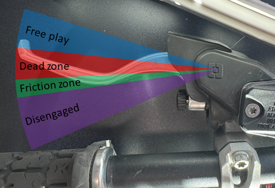
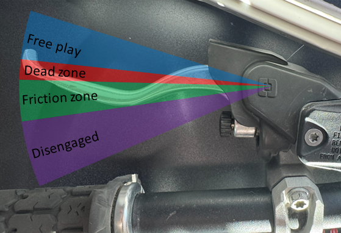

Enduro Clutch Spring
Part# 11-00000
$69.95
The Enduro Clutch Spring provides a lighter clutch pull, smoother clutch feel, and improved modulation for reduced arm pump and better control.
OEM Fitment
Fast Shipping
Premium Quality
Overview
The Enduro Clutch Spring is designed for riders who want a noticeably lighter clutch pull and smoother engagement without sacrificing performance or durability.
Engineered with a regressive spring profile (Patent Pending), this design delivers a 20% reduction in lever force through the full range of clutch travel. It provides true one-finger control of your bike without the compromises of additional clutch throw or external complex components. That means less fatigue, better feel, and longer days on the bike. Whether you’re threading through single track, crawling up slick rock, or hammering through a hard enduro this clutch spring will help with reduce fatigue and improve clutch control.
Engineered to work with your OEM retainer and bolts, fitting perfectly on KTM, Husqvarna, GasGas, and Beta models with no modifications required.
Download Installation Instructions (PDF)Key Features
Reduce arm pump, increase control, and make every ride more enjoyable. The Enduro Clutch Spring brings factory-grade engineering to real-world trails where comfort and consistency matter most.
- 20% Lighter Clutch Pull — Immediate, noticeable reduction in lever effort.
- Regressive Spring Rate — Lighter feel as you pull the lever for smoother modulation and better control.
- OEM Fit & Finish — Installs with stock hardware; no spacers, no trimming, no guesswork.
Fitment
This new spring will change the engangement point of the clutch. Some riders may want additional adjustment. Selecting the appropriate master cylinder will change which pin will be included with the spring. This will allow for clutch engagement to match with a stock lever. Other levers may have enough adjustment or move the engagement point of the clutch and not require the installation of a new pin.
- KTM 2013+ 250/300 2-Stroke Models
- KTM 2013+ 250/350 4-Stroke Models
- Husqvarna 2014+ 250/300 2-Stroke Models
- Husqvarna 2014+ 250/350 4-Stroke Models
- GasGas 2021+ 250/300 2-Stroke Models
- GasGas 2021+ 250/350 4-Stroke Models
- Beta 2022+ 250/300 2-Stroke Models
- Beta 2022+ 350/390 4-Stroke Models
Frequently Asked Questions
How does the Enduro Clutch Spring work?
The Enduro Clutch Spring reduces clutch effort in three main ways:
- This spring is lighter than the OEM springs.
- This spring is more regressive than the OEM springs. It creates maximum load near the flat position. When pushed past flat from actuating the clutch, the force of the spring actually goes down instead of up.
- The reduction in clamping force reduces the dead zone of the clutch. The dead zone is the movement you have to pull the clutch in before it will start to disengage. By removing the excess margin in the clutch, the total distance the clutch needs to be pulled is reduced.
All together this means a lighter pull, over a shorter distance, that gets easier as you pull. Combined, this has a dramatic effect on the amount of effort to control the clutch and greatly reduces arm pump.

OEM spring

Enduro Clutch Spring
If this is better, why didn't the OEM do it?
OEMs have to design to the severe edge cases. A professional rider, at sea level, at full throttle, with an overheating bike, probably needs all of the holding power of the OEM clutch. If you are riding at higher elevations, are meticulous about your maintenance, or don't routinely hit the throttle lock, then you aren't using the full capability of your OEM clutch. However, your finger is having to pull that clutch as if you are.
Will my clutch slip?
Due to the margin in the OEM clutches this clutch spring installed in the lightest position is enough to hold the peak torque of all listed bikes. This has been tested in static and dynamic environments.
How else does this change my clutch?
With the spring being lighter the friction zone of the clutch engagement becomes slightly wider. This is very helpful in hard enduro riding where clutch control is key.
Can I use this with aftermarket clutch components like a 9mm master cylinder or aftermarket lever?
Yes. This has been tested with many aftermarket combinations with no issues. The main consideration is the change in the engagement point.
We provide a pushrod that goes between your lever and master cylinder. With an OEM lever this recenters your engagement point in the lever's adjustment. Aftermarket levers typically have more adjustment and this pin may not be needed.
We have also found that with a 9mm Brembo master cylinder the provided pin is not needed at all.
How long does installation take?
It is super simple. Just lay the bike on its side and take out some bolts. We have detailed instructions linked here.
Limited Lifetime Warranty
MOTOVICTUS products are backed by a limited lifetime warranty against defects in materials and workmanship for the original purchaser.
This warranty covers manufacturing defects under normal use and does not cover damage from accidents, improper installation, modifications, or normal wear and tear. The warranty is non-transferable and applies only to the original purchaser with proof of purchase.
For warranty claims or questions, please contact us at support@motovictus.com.
Important Information
This product changes the characteristics of clutch engagement. Take time to ride and familiarize yourself with the new spring performance. If you experience any issues, contact Motovictus at support@motovictus.com.